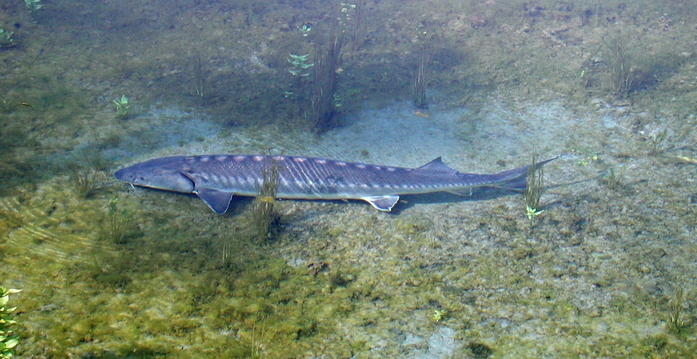

A few projects up close, then the list of clients of the work carried out over the years, grouped by type.
Case studies
Projects, up close.

Adriatic sturgeon. Photo: GRAIA archive.
LIFE CON.FLU.PO · LIFE11 NAT/IT/188 · ended 30 June 2018
Opening the Po to the Adriatic sturgeon
The project restored connectivity in the Po basin, reopening the migration route for the Adriatic sturgeon (Acipenser naccarii) and ten other fish species listed in Annex II of the Habitats Directive.
On 3 April 2019 the first sturgeon, about 1.5 m long, went through the fish pass at Isola Serafini: the project's flagship species showed it uses the Po corridor thanks to that structure.
LIFE19 NAT/IT/000851 · five years, closed with LIFEEL Days (24–26 April 2026)
LIFEEL: saving the European eel
Urgent measures for the long-term conservation of the European eel (Anguilla anguilla), an endangered species, supporting the biodiversity of the Po basin. Three days in Comacchio, in a former eel-processing plant now an ecomuseum, to give results back to the territory.
Role: project partner
Italian recovery plan · NBFC · 1 December 2024 – 30 November 2025
ProSpIttiCo: a system that recognises fish
Development and testing of a monitoring system that recognises fish species passing through fish passes. The team combines GRAIA staff, an IT development company and three professionals chosen for the project.
Joint management of the River Ticino ecological corridor between Italy and Switzerland, based on the 2021–2031 restoration plan built by a network of about thirty bodies, to protect nature, biodiversity and green infrastructure.
GE.RI.KO. MERA: the waters of the Mera, on both sides
Italy and Switzerland share the Mera basin but have different rules. The project builds a common strategy, with attention to solid transport after the Val Bondasca landslide, ecological corridor restoration in Natura 2000 sites and guidelines for cross-border governance.
Role: BLU Progetti, partner
Interreg V-A Italy–Switzerland 2014–2020
Sharesalmo: native salmonids, together
Integrated, shared fisheries management to conserve grayling, marble trout and lake trout and to counter invasive alien species such as the wels catfish, with cross-border governance measures.